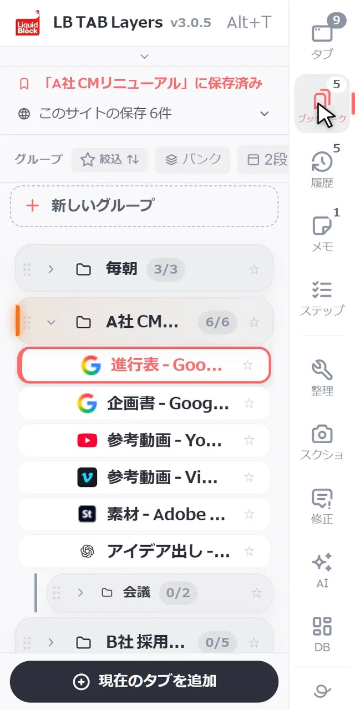
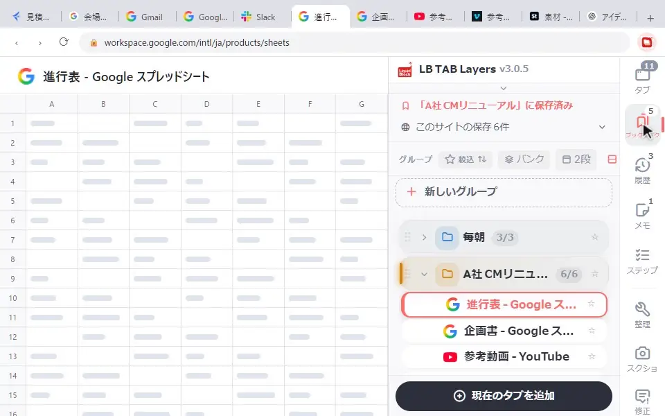

グループは、LB TAB Layers でタブをまとめる単位です。仕事（案件）ごとに1つ作るのがおすすめです。「ブックマーク」の画面の一番上の「＋ 新しいグループ」で作り、名前・色・アイコンを付けられます。グループの中にサブグループを作って分けることもできます。グループは Chrome のブックマークのフォルダとして保存され、▶ で開くと同じ名前・色の Chrome のタブグループになります。
タブが増えて困るのは、「どれが何の仕事のタブか」が分からなくなるからです。LB TAB Layers では、タブをグループに分けて保存します。グループは「ひとつの仕事の机」のようなもので、仕事ごとに1つ作ると、毎日の使い方がとてもシンプルになります。
動く画面で見る：グループを作る
「ブックマーク」の画面で、一覧の一番上の「＋ 新しいグループ」を押し、名前を入れて「作成」。一覧の一番下に新しいグループができます。

グループでできること
| やりたいこと | 操作 |
|---|---|
| 作る | 「ブックマーク」の画面の一番上の「＋ 新しいグループ」 |
| タブを入れる | パネルの下の「現在のタブを追加」、タブを右クリック →「フォルダに保存」、またはドラッグ |
| まとめて開く／閉じる | ▶ で全部開く（Chrome のタブグループになる）、■ でまとめて閉じる（保存はそのまま） |
| 中に分ける | 「…」→「サブグループを追加」 |
| 名前・色・アイコンを変える | 「…」→「編集（名前・アイコン・色）」 |
| 別のウィンドウで開く | 「…」→「新しいウィンドウで開く」 |
| しまっておく・消す | 「…」→「アーカイブ」／「グループを削除」 |
サブグループで、グループの中を分ける
案件が大きくなってきたら、グループの「…」→「サブグループを追加」で、中をもう1段分けられます。「A社」の中に「会議」「素材」「請求」のように分けると、探すときに迷いません。ブックマークでも、フォルダの中のフォルダとして保存されます。

決まった構成を毎回作るなら、右クリックの フォルダプリセット を使うと一度で作れます。
名前と色を変える
「…」→「編集（名前・アイコン・色）」で変えられます。色は一覧で見分ける目印になるうえ、▶ で開いたときの Chrome のタブグループの色にもなります。
こんなふうに使うと便利
仕事（案件）ごとに1つ
「A社 サイト制作」「B社 採用サイト」のように、仕事ごとにグループを作ります。朝は今日の仕事を ▶ で開き、切り替えるときは ■ で閉じて次を ▶。帰るときは ■ で閉じるだけで、明日も同じ並びに戻れます。▶ と ■ の使い方は Chromeのタブグループを自動で作る・まとめて閉じる にくわしく書きました。
「毎朝」グループ
メール・カレンダー・チャットなど、毎朝開くものを1つのグループに。▶ ひとつで1日が始められます。
調べもの用のグループ
まだ仕事にならない調べものは「調べもの」グループへ。気になるページを入れておき、使わなくなったら ■ で閉じておけば、タブバーがすっきりします。
知っておきたいこと
- 保存先は Chrome のブックマークです。グループは同じ名前のブックマークのフォルダになり、拡張を消しても残ります
- 消しても、すぐなら戻せます。グループを削除すると、ブックマークのフォルダごとゴミ箱へ移り、8秒間「元に戻す」が出ます。ゴミ箱の中のものは30日たつと自動で消えます。しばらく使わないだけなら アーカイブ がおすすめです
- グループの名前を押すと開いたり畳んだりするだけなので、うっかりたくさんのタブが開くことはありません
ℹ️ 無料版ではグループは5つまで、サブグループは2階層までです。PRO と、インストールから90日間の試用期間は無制限です。
🎬 グループのほかにも、いろいろできます。パネルを開く、保存したタブを開く、閉じたタブを履歴から戻す、ページにひもづけたメモ、ピンバーまで。ブラウザとパネルの動きをそのまま見られる 操作ガイド（動く画面で見る10の操作） にまとめています。入れたばかりの方は クイックチュートリアル（5分） からどうぞ。
よくある質問
Q. LB TAB Layers のグループはどこに保存されますか？
Chrome のブックマークに、グループと同じ名前のフォルダとして保存されます。拡張を削除してもブックマークとして残ります。
Q. グループの中にグループを作れますか？
はい。グループの「…」→「サブグループを追加」で作れます。無料版は2階層まで、PRO と試用期間中は無制限です。
Q. グループを消してしまいました。戻せますか？
消した直後なら、8秒間出る「元に戻す」で戻せます。消したグループはブックマークのゴミ箱フォルダに移っていて、30日たつと自動で消えます。
Q. グループの色は何に使われますか？
一覧で見分ける目印になるほか、▶ で開いたときの Chrome のタブグループの色にもなります。
▶ 実際の操作を動画で見る
サイドバーで、ブックマークとタブをいっしょに管理する様子です。